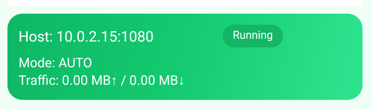

Supports full‑tunnel VPN proxy and LAN proxy; set host IP + port as needed.
If you have any questions during setup, you can contact me at wenyuanshuai@gmail.com. I will reply within 24 hours.
Purpose
Use this device as a LAN proxy gateway on the same Wi‑Fi/hotspot; other devices forward traffic via this host (can stack with host VPN). Supports simultaneous connections from multiple devices.
Configuration parameters

Host: 10.0.2.15:1080 Host IP: 10.0.2.15 Host port: 1080 Replace the example IP and port with your host's actual values. These two parameters will be used later in the setup. If the Listener Port is unavailable or in use, choose any port between 1024–49151; functionality is the same.
Host (with VPN) steps
Open the app, pick proxy mode (recommend “Auto-detect”) and port (default 1080).
Ensure host and clients are on the same LAN; port not occupied.
Tap “Start Gateway”.
For stable sharing service, disable battery optimization for this app in system settings, and allow auto-start (if available) and background running (if available).
Full‑tunnel VPN proxy
Install Clash on another device, download the generated YAML first, then import it in Clash via file import (direct link subscription is not supported currently). Use this when you want full‑device VPN proxying. The IP and port must match the host (with VPN) service you started.
Open Clash and drag the downloaded YAML file into the window to import.
1Open Clash
2Drag YAML to import
Windows / macOS: Enable Full/TUN mode
1Switch to Full/TUN and enable
LAN proxy / Wi‑Fi LAN proxy
Configure this on other devices. After configuration, they can share the host's VPN. Due to system restrictions it typically supports only HTTP/HTTPS, and some apps can bypass the proxy settings, which may cause VPN sharing to fail, but in most cases it still works.
Android: Wi‑Fi details → Proxy = Manual; host = host IP, port = host port. Or set HTTP/HTTPS in apps.
iOS: Settings → Wi‑Fi → current network → Configure Proxy = Manual; server = host IP, port = host port (HTTP/HTTPS).
Windows: Settings → Network & Internet → Proxy → Manual; address = host IP, port = host port (HTTP/HTTPS); proxy bypass = localhost;127.*;192.168.*;10.*;172.16.*;172.17.*;172.18.*;172.19.*;172.20.*;172.21.*;172.22.*;172.23.*;172.24.*;172.25.*;172.26.*;172.27.*;172.28.*;172.29.*;172.30.*;172.31.*.
macOS: System Settings → Network → current interface → Details → Proxies; check HTTP/HTTPS (or SOCKS5), server = host IP, port = host port.
Other devices: fill host IP + host port in HTTP/HTTPS/SOCKS5 proxy settings supported by the device/app.
Enhanced mode (Inbound relay)
Use case: The VPN blocks inbound connections from LAN devices to the host, and the VPN supports features like “app exclusion/per‑app bypass.”
How to use: First install the inbound‑relay plugin (companion component) and grant permissions as prompted. In the VPN’s per‑app/exclusion list, set this plugin to direct connection (do not go through the VPN). Then set the proxy on other devices to the host IP and host port, and keep the gateway service running on the host.
How it works: The plugin handles local listening and LAN communication, while the main app handles proxying and VPN egress. The two cooperate and forward traffic locally on the same device.
Notes: The plugin must be excluded from the VPN; otherwise LAN connections will be hijacked by the VPN and become unavailable. If you’re not sure whether the configuration is correct, open the plugin app and check its status indicators.
Enhanced mode (Outbound relay)
Use case: The VPN blocks inbound connections from LAN devices to the host, and the VPN does not support features like “app exclusion/per‑app bypass.”
How to use: On the main device, enable the VPN and turn on the outbound‑relay switch, then tap Scan. On the companion device, turn off the VPN and turn on the outbound‑relay switch; it will display a QR code. Use the main device to scan the QR code to establish the connection.
How it works: Enhanced mode adds a companion device and moves the proxy service to that device. The host (with VPN) makes outbound connections to the companion device, brings the data back, and then initiates requests locally.
Notes: The companion device can also be configured like other devices (full‑tunnel VPN proxy / LAN proxy / Wi‑Fi LAN proxy) to use the main device’s VPN. If the companion device needs a full‑tunnel VPN proxy via Clash, turn off Clash (VPN), connect to the main device first, then turn Clash (VPN) back on after the connection is established. The system currently distinguishes the main device from companion devices based on whether VPN is enabled.
استخدم الجهاز كبوابة وكيل داخل نفس شبكة Wi‑Fi/نقطة الاتصال؛ تُمرَّر حركة الأجهزة الأخرى عبر هذا المضيف (يمكن تكديس VPN المضيف). يدعم الاتصال المتزامن لعدة أجهزة.
شرح معلمات الإعداد
المضيف: 10.0.2.15:1080 عنوان IP للمضيف: 10.0.2.15 منفذ المضيف: 1080 استبدل قيم IP والمنفذ في المثال بالقيم الفعلية لجهاز المضيف. سيُستخدم هذان المعلمان لاحقًا في الإعداد. إذا أظهر Listener Port أنه غير متاح أو قيد الاستخدام، فاختر أي منفذ بين 1024–49151؛ لا يوجد فرق في الوظيفة.
خطوات المضيف (مع VPN)
افتح التطبيق، واختر وضع الوكيل (يُنصح بـ “اكتشاف تلقائي”) والمنفذ (الافتراضي 1080). الإصدار الحالي يوجّه كل الحركة عبر الوكيل.
تأكد أن المضيف والعميل على نفس شبكة LAN وأن المنفذ غير مشغول.
اضغط “بدء البوابة”.
لضمان استقرار خدمة المشاركة، عطّل تحسين البطارية لهذا التطبيق في إعدادات النظام، واسمح بالتشغيل التلقائي (إن وجد) والعمل في الخلفية (إن وجد).
وكيل VPN كامل النطاق
ثبّت Clash على جهاز آخر، ثم نزّل ملف YAML المُنشأ أولًا، وبعدها استورده في Clash عبر استيراد ملف (الاشتراك المباشر عبر الرابط غير مدعوم حاليًا). استخدمه عندما تريد توجيه كل حركة الجهاز عبر الـVPN. يجب أن يطابق عنوان IP والمنفذ خدمة المضيف (مع VPN) التي قمت بتشغيلها.
Open Clash and drag the downloaded YAML file into the window to import.
1Open Clash
2Drag YAML to import
Windows / macOS: Enable Full/TUN mode
1Switch to Full/TUN and enable
وكيل LAN / وكيل Wi‑Fi LAN
يُضبط هذا على الأجهزة الأخرى. وبعد الإعداد يمكنها مشاركة VPN الخاص بالمضيف. وبسبب قيود النظام فهو يدعم عادةً HTTP/HTTPS فقط، وقد تتجاوز بعض التطبيقات إعدادات الوكيل مما قد يؤدي إلى فشل مشاركة VPN، لكنه يعمل في معظم الحالات.
Android: تفاصيل Wi‑Fi → الوكيل = يدوي؛ الخادم = IP المضيف، المنفذ = منفذ المضيف. أو املأ HTTP/HTTPS في التطبيقات.
iOS: الإعدادات → Wi‑Fi → الشبكة الحالية → تكوين الوكيل = يدوي؛ الخادم = IP المضيف، المنفذ = منفذ المضيف (HTTP/HTTPS).
Windows: الإعدادات → الشبكة والإنترنت → الوكيل → يدوي؛ العنوان = IP المضيف، المنفذ = منفذ المضيف (HTTP/HTTPS)؛ قائمة التجاهل: localhost;127.*;192.168.*;10.*;172.16.*;172.17.*;172.18.*;172.19.*;172.20.*;172.21.*;172.22.*;172.23.*;172.24.*;172.25.*;172.26.*;172.27.*;172.28.*;172.29.*;172.30.*;172.31.*.
macOS: إعدادات النظام → الشبكة → الواجهة الحالية → التفاصيل → الوكلاء؛ فعّل HTTP/HTTPS (أو SOCKS5)، الخادم = IP المضيف، المنفذ = منفذ المضيف.
أجهزة أخرى: أدخل IP المضيف + منفذ المضيف في إعدادات وكيل HTTP/HTTPS/SOCKS5 المدعومة.
الوضع المعزز (ترحيل داخلي)
استخدمه عندما تتمكن أجهزة LAN الأخرى من الوصول إلى المضيف مباشرةً. تبقى خدمة الوكيل على المضيف؛ وتتصل الأجهزة بعنوان IP/المنفذ لتشارك VPN الخاص بالمضيف.
الوضع المعزز (ترحيل خارجي)
تمنع بعض شبكات VPN الاتصالات الواردة من أجهزة LAN الأخرى، لذلك لا يمكنها الوصول إلى خدمة الوكيل على هذا المضيف وتفشل مشاركة VPN. يضيف الوضع المعزز جهازًا مساعدًا وينقل خدمة الوكيل إليه. يتصل هذا المضيف (مع VPN) بالخارج بجهاز المساعدة، يعيد البيانات ثم ينفّذ الطلبات محليًا.
إذا لم تتمكن أجهزة LAN الأخرى من الوصول إلى الوكيل بعد الإعداد الصحيح، فعّل الوضع المعزز (ترحيل خارجي). يمكن للجهاز المساعد إعداد الوكيل مثل باقي الأجهزة لاستخدام VPN على الجهاز الرئيسي.
مهم: إذا احتاج الجهاز المساعد إلى وكيل VPN كامل النطاق عبر Clash، فأوقف VPN الخاص به أولًا واتصل بالجهاز الرئيسي؛ وبعد اكتمال الاتصال فعِّل VPN مرة أخرى. يميّز النظام حاليًا بين الجهاز الرئيسي والأجهزة المساعدة بناءً على تفعيل VPN من عدمه.
Zweck
Nutze dieses Gerät im selben Wi‑Fi/Hotspot als LAN‑Proxy-Gateway; andere Geräte leiten den Verkehr über diesen Host (VPN des Hosts kann gestapelt werden). Unterstützt gleichzeitige Verbindungen mehrerer Geräte.
Konfigurationsparameter
Host: 10.0.2.15:1080 Host-IP: 10.0.2.15 Host-Port: 1080 Ersetze die Beispiel‑IP und den Port durch die tatsächlichen Werte deines Host‑Geräts. Diese beiden Parameter werden in der weiteren Konfiguration verwendet. Wenn der Listener-Port nicht verfügbar oder belegt ist, wähle einen beliebigen Port zwischen 1024–49151; die Funktion bleibt gleich.
Schritte auf dem Host (mit VPN)
App öffnen, Proxy-Modus wählen (empfohlen „Automatisch erkennen“) und Port wählen (Standard 1080). Aktuelle Version routet den gesamten Verkehr über den Proxy.
Sicherstellen, dass Host und Clients im selben LAN sind und der Port frei ist.
„Gateway starten“ tippen.
Für einen stabilen Betrieb der Freigabe deaktivieren Sie in den Systemeinstellungen die Akku-Optimierung für diese App und erlauben Sie Autostart (falls verfügbar) sowie Hintergrundausführung (falls verfügbar).
Volltunnel‑VPN‑Proxy
Installiere Clash auf einem anderen Gerät, lade die erzeugte YAML‑Datei zuerst herunter und importiere sie dann in Clash per Dateiimport (direktes Link‑Abonnement wird derzeit nicht unterstützt). Für vollständiges Geräte‑Routing. IP und Port müssen mit dem gestarteten Host‑Dienst (mit VPN) übereinstimmen.
Open Clash and drag the downloaded YAML file into the window to import.
1Open Clash
2Drag YAML to import
Windows / macOS: Enable Full/TUN mode
1Switch to Full/TUN and enable
LAN‑Proxy / Wi‑Fi‑LAN‑Proxy
Diese Einstellung wird auf anderen Geräten vorgenommen. Nach der Einrichtung können sie das VPN des Hosts mitnutzen. Aufgrund von Systembeschränkungen wird meist nur HTTP/HTTPS unterstützt, und einige Apps können die Proxy‑Einstellungen umgehen, was dazu führen kann, dass die VPN‑Freigabe fehlschlägt; in den meisten Fällen funktioniert es dennoch.
Android: WLAN-Details → Proxy = Manuell; Host = Host-IP, Port = Host-Port. Oder HTTP/HTTPS in Apps eintragen.
iOS: Einstellungen → WLAN → aktuelles Netzwerk → Proxy konfigurieren = Manuell; Server = Host-IP, Port = Host-Port (HTTP/HTTPS).
Windows: Einstellungen → Netzwerk & Internet → Proxy → Manuell; Adresse = Host-IP, Port = Host-Port (HTTP/HTTPS); Proxy-Ausnahmen: localhost;127.*;192.168.*;10.*;172.16.*;172.17.*;172.18.*;172.19.*;172.20.*;172.21.*;172.22.*;172.23.*;172.24.*;172.25.*;172.26.*;172.27.*;172.28.*;172.29.*;172.30.*;172.31.*.
Andere Geräte: Host-IP + Host-Port in den HTTP/HTTPS/SOCKS5-Proxyfeldern des Geräts/der App eintragen.
Erweiterter Modus (Interne Weiterleitung)
Verwenden, wenn andere LAN‑Geräte den Host direkt erreichen können. Der Proxy läuft auf dem Host; Clients verbinden sich mit Host‑IP/Port und nutzen das VPN des Hosts.
Erweiterter Modus (Externe Weiterleitung)
Einige VPNs blockieren eingehende Verbindungen von anderen LAN‑Geräten, sodass diese den Proxy‑Dienst auf diesem Host nicht erreichen und das VPN‑Sharing fehlschlägt. Der erweiterte Modus fügt ein Begleitgerät hinzu und verlagert den Proxy‑Dienst dorthin. Dieser Host (mit VPN) verbindet sich ausgehend mit dem Begleitgerät, bringt die Daten zurück und führt die Anfragen lokal aus.
Wenn andere LAN‑Geräte trotz korrekter Einstellungen nicht auf den Proxy zugreifen können, aktiviere den erweiterten Modus (externe Weiterleitung). Das Begleitgerät kann wie andere Clients einen Proxy einrichten, um das VPN des Hauptgeräts zu nutzen.
Wichtig: Wenn das Begleitgerät einen Clash‑Volltunnel‑VPN‑Proxy nutzen muss, schalte sein eigenes VPN zuerst aus und stelle die Verbindung zum Hauptgerät her; aktiviere das VPN erst nach erfolgreicher Verbindung. Das System unterscheidet Haupt‑ und Begleitgeräte derzeit anhand des VPN‑Status.
Propósito
Usa este dispositivo como puerta de enlace proxy en la misma red Wi‑Fi/punto de acceso; los demás equipos envían su tráfico a través de este host (puede combinarse con la VPN del host). Admite conexiones simultáneas de varios dispositivos.
Parámetros de configuración
Host: 10.0.2.15:1080 IP del host: 10.0.2.15 Puerto del host: 1080 Sustituye la IP y el puerto de ejemplo por los valores reales del dispositivo host. Estos dos parámetros se usarán en la configuración posterior. Si el Listener Port no está disponible o está en uso, elige cualquier puerto entre 1024–49151; la funcionalidad es la misma.
Pasos en el host (con VPN)
Abre la app, elige el modo de proxy (se recomienda “Detección automática”) y el puerto (predeterminado 1080). La versión actual dirige todo el tráfico por el proxy.
Asegúrate de que el host y los clientes estén en la misma LAN y que el puerto esté libre.
Toca “Iniciar gateway”.
Para que el servicio de compartición sea estable, desactiva la optimización de batería de esta app en Ajustes del sistema y permite el inicio automático (si existe) y la ejecución en segundo plano (si existe).
Proxy VPN de túnel completo
Instala Clash en otro dispositivo, descarga primero el YAML generado y luego impórtalo en Clash mediante importación de archivo (la suscripción directa por enlace no es compatible por ahora). Úsalo cuando necesites proxy a nivel de todo el dispositivo. La IP y el puerto deben coincidir con el servicio del host (con VPN) que iniciaste.
Open Clash and drag the downloaded YAML file into the window to import.
1Open Clash
2Drag YAML to import
Windows / macOS: Enable Full/TUN mode
1Switch to Full/TUN and enable
Proxy LAN / Proxy LAN por Wi‑Fi
Esta configuración se hace en otros dispositivos. Tras la configuración, pueden compartir la VPN del host. Por restricciones del sistema suele admitir solo HTTP/HTTPS, y algunas apps pueden omitir la configuración del proxy, lo que puede hacer que el uso compartido de VPN falle; en la mayoría de los casos funciona.
Android: Detalles de Wi‑Fi → Proxy = Manual; host = IP del host, puerto = puerto del host. O configura HTTP/HTTPS en las apps.
iOS: Ajustes → Wi‑Fi → red actual → Configurar proxy = Manual; servidor = IP del host, puerto = puerto del host (HTTP/HTTPS).
Windows: Configuración → Red e Internet → Proxy → Manual; dirección = IP del host, puerto = puerto del host (HTTP/HTTPS); excepciones del proxy: localhost;127.*;192.168.*;10.*;172.16.*;172.17.*;172.18.*;172.19.*;172.20.*;172.21.*;172.22.*;172.23.*;172.24.*;172.25.*;172.26.*;172.27.*;172.28.*;172.29.*;172.30.*;172.31.*.
macOS: Ajustes del sistema → Red → interfaz actual → Detalles → Proxies; marca HTTP/HTTPS (o SOCKS5), servidor = IP del host, puerto = puerto del host.
Otros dispositivos: introduce IP del host + puerto del host en los ajustes de proxy HTTP/HTTPS/SOCKS5 que el equipo o la app admitan.
Modo mejorado (reenvío interno)
Úsalo cuando otros dispositivos LAN pueden acceder directamente al host. El proxy permanece en el host; los clientes se conectan al IP/puerto del host para compartir la VPN del host.
Modo mejorado (reenvío externo)
Algunas VPN bloquean las conexiones entrantes de otros dispositivos de la LAN, por lo que no pueden acceder al servicio de proxy en este host y el uso compartido de VPN falla. El modo mejorado añade un dispositivo colaborador y traslada allí el servicio de proxy. Este host (con VPN) se conecta hacia afuera al dispositivo colaborador, trae los datos y luego realiza las solicitudes localmente.
Si otros dispositivos de la LAN aún no pueden acceder al proxy con la configuración correcta, activa el modo mejorado (reenvío externo). El dispositivo colaborador puede configurar el proxy como los demás equipos para usar la VPN del dispositivo principal.
Importante: Si el dispositivo colaborador necesita un proxy VPN de túnel completo mediante Clash, primero apaga su propio VPN y conéctalo al dispositivo principal; cuando la conexión se complete, vuelve a activar el VPN. El sistema distingue actualmente entre dispositivo principal y colaborador según si el VPN está activado.
هدف
از این دستگاه در همان شبکه Wi‑Fi/هاتاسپات بهعنوان درگاه پروکسی LAN استفاده کنید؛ ترافیک سایر دستگاهها از این میزبان عبور میکند (میتوان آن را با VPN میزبان ترکیب کرد). از اتصال همزمان چند دستگاه پشتیبانی میکند.
پارامترهای پیکربندی
میزبان: 10.0.2.15:1080 IP میزبان: 10.0.2.15 پورت میزبان: 1080 آیپی و پورت نمونه را با مقادیر واقعی دستگاه میزبان جایگزین کنید. این دو پارامتر در تنظیمات بعدی استفاده میشوند. اگر Listener Port در دسترس نبود یا اشغال بود، هر پورتی بین 1024–49151 را انتخاب کنید؛ عملکرد تفاوتی ندارد.
مراحل میزبان (با VPN)
اپ را باز کنید، حالت پروکسی (پیشنهاد «تشخیص خودکار») و پورت (پیشفرض 1080) را برگزینید. نسخه فعلی تمام ترافیک را از طریق پروکسی هدایت میکند.
مطمئن شوید میزبان و کلاینت در یک LAN هستند و پورت اشغال نشده است.
روی «شروع درگاه» بزنید.
برای پایداری سرویس اشتراکگذاری، در تنظیمات سیستم بهینهسازی باتری این برنامه را خاموش کنید و اجرای خودکار (در صورت وجود) و اجرای پسزمینه (در صورت وجود) را مجاز کنید.
پروکسی VPN تمامترافیک
روی یک دستگاه دیگر Clash را نصب کنید، ابتدا فایل YAML تولیدشده را دانلود کنید و سپس از طریق ایمپورت فایل در Clash اضافه کنید (در حال حاضر اشتراک مستقیم از طریق لینک پشتیبانی نمیشود). مناسب برای پروکسی سراسری دستگاه. IP و پورت باید با سرویس میزبان (با VPN) که اجرا کردهاید یکسان باشد.
Clash را باز کنید و فایل YAML دانلودشده را برای وارد کردن به پنجره بکشید.
1Clash را باز کنید
2YAML را بکشید تا وارد شود
Windows / macOS: فعالسازی حالت Full/TUN
1به Full/TUN تغییر دهید و فعال کنید
پروکسی LAN / پروکسی LAN از طریق Wi‑Fi
این تنظیم را باید روی دستگاههای دیگر انجام دهید. پس از تنظیم، میتوانند از VPN میزبان استفاده کنند. بهدلیل محدودیتهای سیستم معمولاً فقط HTTP/HTTPS پشتیبانی میشود و برخی برنامهها میتوانند تنظیمات پروکسی را دور بزنند که ممکن است باعث از کار افتادن اشتراکگذاری VPN شود، اما در بیشتر موارد همچنان کار میکند.
Android: جزئیات Wi‑Fi → پروکسی = دستی؛ سرور = IP میزبان، پورت = پورت میزبان. یا در اپهای پشتیبان، HTTP/HTTPS را پر کنید.
دستگاههای دیگر: در تنظیمات پروکسی HTTP/HTTPS/SOCKS5 پشتیبانیشده، IP میزبان + پورت میزبان را وارد کنید.
حالت تقویتشده (انتقال داخلی)
وقتی دستگاههای دیگر LAN بتوانند مستقیم به میزبان دسترسی داشته باشند از این حالت استفاده کنید. سرویس پروکسی روی میزبان میماند؛ کلاینتها با IP/پورت میزبان وصل میشوند تا VPN میزبان را به اشتراک بگذارند.
حالت تقویتشده (انتقال خارجی)
برخی VPNها اتصالهای ورودی از دستگاههای دیگر در LAN را مسدود میکنند، بنابراین دستگاهها نمیتوانند به سرویس پراکسی روی این میزبان دسترسی پیدا کنند و اشتراک VPN از کار میافتد. حالت تقویتشده یک دستگاه همکار اضافه میکند و سرویس پراکسی را به آن منتقل میکند. این میزبان (با VPN) بهصورت خروجی به دستگاه همکار متصل میشود، داده را برمیگرداند و سپس درخواستها را محلی انجام میدهد.
اگر دستگاههای دیگر LAN با وجود تنظیمات صحیح هنوز به پراکسی دسترسی ندارند، حالت تقویتشده (انتقال خارجی) را فعال کنید. دستگاه همکار میتواند مانند سایر دستگاهها پراکسی را تنظیم کند و از VPN دستگاه اصلی استفاده کند.
مهم: اگر دستگاه همکار به پراکسی VPN تمامترافیک از طریق Clash نیاز دارد، ابتدا VPN خودش را خاموش کرده و به دستگاه اصلی متصل شوید؛ پس از برقراری اتصال، VPN را دوباره روشن کنید. سیستم در حال حاضر نقش دستگاهها را بر اساس فعال بودن VPN تشخیص میدهد.
Objet
Utilisez cet appareil comme passerelle proxy LAN sur le même Wi‑Fi/point d’accès ; les autres appareils font transiter leur trafic via cet hôte (VPN du serveur hôte possible). Prend en charge les connexions simultanées de plusieurs appareils.
Paramètres de configuration
Hôte : 10.0.2.15:1080 IP de l’hôte : 10.0.2.15 Port de l’hôte : 1080 Remplacez l’IP et le port d’exemple par les valeurs réelles de l’appareil hôte. Ces deux paramètres seront utilisés dans la suite de la configuration. Si le Listener Port est indisponible ou occupé, choisissez n’importe quel port entre 1024–49151 ; la fonctionnalité est identique.
Étapes côté hôte (avec VPN)
Ouvrez l’app, choisissez le mode proxy (recommandé « Détection auto ») et le port (1080 par défaut). La version actuelle force tout le trafic via ce proxy.
Vérifiez que l’hôte et les clients sont sur le même LAN et que le port est libre.
Appuyez sur « Démarrer la passerelle ».
Pour assurer la stabilité du partage, désactivez l’optimisation de la batterie pour cette app dans les réglages système, et autorisez le démarrage automatique (si disponible) et l’exécution en arrière-plan (si disponible).
Proxy VPN tunnel complet
Installez Clash sur un autre appareil, téléchargez d’abord le YAML généré, puis importez‑le dans Clash via l’import de fichier (l’abonnement direct par lien n’est pas pris en charge pour l’instant). À utiliser pour un proxy global de l’appareil. L’IP et le port doivent correspondre au service hôte (avec VPN) démarré.
Open Clash and drag the downloaded YAML file into the window to import.
1Open Clash
2Drag YAML to import
Windows / macOS: Enable Full/TUN mode
1Switch to Full/TUN and enable
Proxy LAN / Proxy LAN via Wi‑Fi
Ce réglage se fait sur les autres appareils. Après configuration, ils peuvent partager le VPN de l’hôte. À cause des restrictions du système, seul HTTP/HTTPS est généralement pris en charge, et certaines apps peuvent contourner la configuration proxy, ce qui peut faire échouer le partage VPN; dans la plupart des cas, cela fonctionne.
Android : Détails Wi‑Fi → Proxy = Manuel ; hôte = IP de l’hôte, port = port de l’hôte. Ou renseignez HTTP/HTTPS dans les apps.
iOS : Réglages → Wi‑Fi → réseau actuel → Configurer le proxy = Manuel ; serveur = IP hôte, port = port de l’hôte (HTTP/HTTPS).
Windows : Paramètres → Réseau et Internet → Proxy → Manuel ; adresse = IP hôte, port = port de l’hôte (HTTP/HTTPS) ; exceptions proxy : localhost;127.*;192.168.*;10.*;172.16.*;172.17.*;172.18.*;172.19.*;172.20.*;172.21.*;172.22.*;172.23.*;172.24.*;172.25.*;172.26.*;172.27.*;172.28.*;172.29.*;172.30.*;172.31.*.
macOS : Réglages Système → Réseau → interface actuelle → Détails → Proxys ; cochez HTTP/HTTPS (ou SOCKS5), serveur = IP hôte, port = port de l’hôte.
Autres appareils : renseignez IP hôte + port de l’hôte dans les paramètres proxy HTTP/HTTPS/SOCKS5 pris en charge.
Mode renforcé (relais interne)
À utiliser lorsque les autres appareils LAN peuvent accéder directement à l’hôte. Le proxy reste sur l’hôte ; les clients se connectent à l’IP/port de l’hôte pour partager le VPN de l’hôte.
Mode renforcé (relais externe)
Certains VPN bloquent les connexions entrantes des autres appareils du LAN, ce qui empêche d’atteindre le service proxy sur cet hôte et fait échouer le partage VPN. Le mode renforcé ajoute un appareil compagnon et déplace le service proxy dessus. Cet hôte (avec VPN) se connecte en sortie à l’appareil compagnon, récupère les données puis effectue les requêtes localement.
Si les autres appareils du LAN ne peuvent toujours pas accéder au proxy malgré une configuration correcte, activez le mode renforcé (relais externe). L’appareil compagnon peut configurer le proxy comme les autres clients afin d’utiliser le VPN de l’appareil principal.
Important : si l’appareil compagnon doit utiliser un proxy VPN tunnel complet via Clash, désactivez d’abord son propre VPN et connectez‑vous à l’appareil principal ; une fois la connexion établie, réactivez le VPN. Le système distingue actuellement l’appareil principal et l’appareil compagnon selon l’état du VPN.
उद्देश्य
उसी Wi‑Fi/हॉटस्पॉट में इस डिवाइस को LAN प्रॉक्सी गेटवे बनाएं; अन्य डिवाइस का ट्रैफ़िक इस होस्ट से होकर गुजरता है (होस्ट VPN को जोड़ सकते हैं)। कई डिवाइस एक साथ कनेक्ट हो सकते हैं।
कॉन्फ़िगरेशन पैरामीटर
होस्ट: 10.0.2.15:1080 होस्ट IP: 10.0.2.15 होस्ट पोर्ट: 1080 उदाहरण IP और पोर्ट को होस्ट डिवाइस के वास्तविक मानों से बदलें। ये दोनों पैरामीटर आगे की कॉन्फ़िगरेशन में उपयोग होंगे। यदि Listener Port उपलब्ध नहीं है या उपयोग में है, तो 1024–49151 के बीच कोई भी पोर्ट चुनें; कार्यक्षमता समान रहती है।
होस्ट के चरण (VPN के साथ)
ऐप खोलें, प्रॉक्सी मोड चुनें (अनुशंसित “ऑटो-डिटेक्ट”) और पोर्ट चुनें (डिफ़ॉल्ट 1080)। वर्तमान संस्करण पूरा ट्रैफ़िक प्रॉक्सी से भेजता है।
सुनिश्चित करें कि होस्ट और क्लाइंट एक ही LAN पर हैं और पोर्ट खाली है।
“गेटवे शुरू करें” टैप करें।
साझा सेवा को स्थिर रखने के लिए, सिस्टम सेटिंग्स में इस ऐप की बैटरी ऑप्टिमाइज़ेशन बंद करें, और ऑटो-स्टार्ट (यदि उपलब्ध हो) तथा बैकग्राउंड रनिंग (यदि उपलब्ध हो) की अनुमति दें।
फुल‑टनल VPN प्रॉक्सी
किसी अन्य डिवाइस पर Clash इंस्टॉल करें, पहले जनरेट किए YAML को डाउनलोड करें और फिर Clash में फ़ाइल इम्पोर्ट से जोड़ें (लिंक से सीधे सब्सक्रिप्शन अभी समर्थित नहीं है)। जब आपको पूरे डिवाइस का प्रॉक्सी चाहिए तब उपयोग करें। IP और पोर्ट वही होने चाहिए जो होस्ट (VPN सहित) पर चालू सेवा में हैं।
Open Clash and drag the downloaded YAML file into the window to import.
1Open Clash
2Drag YAML to import
Windows / macOS: Enable Full/TUN mode
1Switch to Full/TUN and enable
LAN प्रॉक्सी / Wi‑Fi LAN प्रॉक्सी
यह सेटिंग अन्य डिवाइस पर की जाती है। कॉन्फ़िगर करने के बाद वे होस्ट का VPN साझा कर सकते हैं। सिस्टम सीमाओं के कारण आम तौर पर केवल HTTP/HTTPS समर्थित होते हैं, और कुछ ऐप्स प्रॉक्सी सेटिंग को बायपास कर सकते हैं, जिससे VPN शेयरिंग विफल हो सकती है; लेकिन अधिकांश मामलों में यह काम करता है।
Android: Wi‑Fi विवरण → Proxy = Manual; होस्ट = होस्ट IP, पोर्ट = होस्ट पोर्ट। या ऐप में HTTP/HTTPS भरें।
अन्य डिवाइस: समर्थित HTTP/HTTPS/SOCKS5 प्रॉक्सी सेटिंग में होस्ट IP + होस्ट पोर्ट भरें।
एन्हांस्ड मोड (आंतरिक रिले)
जब अन्य LAN डिवाइस होस्ट तक सीधे पहुँच सकते हों, तब उपयोग करें। प्रॉक्सी सेवा होस्ट पर रहती है; क्लाइंट होस्ट IP/पोर्ट से जुड़कर होस्ट का VPN साझा करते हैं।
एन्हांस्ड मोड (बाहरी रिले)
कुछ VPN अन्य LAN डिवाइसों से आने वाले इनबाउंड कनेक्शन को ब्लॉक करते हैं, इसलिए वे इस होस्ट पर चल रहे प्रॉक्सी सर्विस तक नहीं पहुंच पाते और VPN शेयरिंग विफल हो जाती है। एन्हांस्ड मोड एक सहयोगी डिवाइस जोड़ता है और प्रॉक्सी सर्विस को उस डिवाइस पर शिफ्ट करता है। यह होस्ट (VPN के साथ) उस सहयोगी डिवाइस से आउटबाउंड कनेक्शन करता है, डेटा वापस लाता है और फिर लोकल रूप से अनुरोध करता है।
यदि सही सेटिंग्स के बाद भी अन्य LAN डिवाइस प्रॉक्सी तक नहीं पहुंच पा रहे हों, तो एन्हांस्ड मोड (बाहरी रिले) चालू करें। सहयोगी डिवाइस अन्य डिवाइस की तरह प्रॉक्सी सेट करके मुख्य डिवाइस का VPN उपयोग कर सकता है।
महत्वपूर्ण: यदि सहयोगी डिवाइस को Clash के जरिए फुल‑टनल VPN प्रॉक्सी चाहिए, तो पहले उसका अपना VPN बंद करके मुख्य डिवाइस से कनेक्ट करें; कनेक्शन पूरा होने के बाद VPN चालू करें। सिस्टम अभी मुख्य और सहयोगी डिवाइस को VPN के चालू होने के आधार पर अलग करता है।
Tujuan
Gunakan perangkat ini sebagai gateway proxy LAN pada Wi‑Fi/hotspot yang sama; perangkat lain meneruskan trafik lewat host ini (bisa ditumpuk dengan VPN host). Mendukung koneksi simultan banyak perangkat.
Parameter konfigurasi
Host: 10.0.2.15:1080 IP host: 10.0.2.15 Port host: 1080 Ganti IP dan port contoh dengan nilai sebenarnya di perangkat host. Dua parameter ini akan digunakan pada konfigurasi berikutnya. Jika Listener Port tidak tersedia atau sedang dipakai, pilih port apa pun antara 1024–49151; fungsinya sama.
Langkah di host (dengan VPN)
Buka app, pilih mode proxy (disarankan “Deteksi otomatis”) dan port (default 1080). Versi sekarang memaksa seluruh trafik lewat proxy.
Pastikan host dan klien berada pada LAN yang sama dan port tidak dipakai.
Ketuk “Mulai Gateway”.
Agar layanan berbagi stabil, nonaktifkan optimisasi baterai untuk aplikasi ini di pengaturan sistem, dan izinkan mulai otomatis (jika tersedia) serta berjalan di latar belakang (jika tersedia).
Proxy VPN full‑tunnel
Instal Clash di perangkat lain, unduh dulu YAML yang dibuat, lalu impor di Clash lewat impor file (langganan langsung lewat tautan belum didukung). Cocok untuk proxy seluruh perangkat. IP dan port harus sama dengan layanan host (dengan VPN) yang kamu jalankan.
Open Clash and drag the downloaded YAML file into the window to import.
1Open Clash
2Drag YAML to import
Windows / macOS: Enable Full/TUN mode
1Switch to Full/TUN and enable
Proxy LAN / Proxy LAN Wi‑Fi
Pengaturan ini dilakukan di perangkat lain. Setelah dikonfigurasi, perangkat dapat berbagi VPN host. Karena batasan sistem biasanya hanya mendukung HTTP/HTTPS, dan beberapa aplikasi dapat melewati pengaturan proxy, sehingga berbagi VPN bisa gagal; namun pada kebanyakan kasus tetap berfungsi.
Android: Detail Wi‑Fi → Proxy = Manual; host = IP perangkat host, port = port host. Atau isi HTTP/HTTPS di aplikasi.
iOS: Settings → Wi‑Fi → jaringan saat ini → Configure Proxy = Manual; server = IP host, port = port host (HTTP/HTTPS).
Windows: Settings → Network & Internet → Proxy → Manual; address = IP host, port = port host (HTTP/HTTPS); pengecualian proxy: localhost;127.*;192.168.*;10.*;172.16.*;172.17.*;172.18.*;172.19.*;172.20.*;172.21.*;172.22.*;172.23.*;172.24.*;172.25.*;172.26.*;172.27.*;172.28.*;172.29.*;172.30.*;172.31.*.
macOS: System Settings → Network → antarmuka saat ini → Details → Proxies; centang HTTP/HTTPS (atau SOCKS5), server = IP host, port = port host.
Perangkat lain: isi IP host + port host di pengaturan proxy HTTP/HTTPS/SOCKS5 yang didukung.
Mode diperkuat (relay masuk)
Gunakan saat perangkat LAN lain dapat mengakses host secara langsung. Layanan proxy tetap di host; klien terhubung ke IP/port host untuk berbagi VPN host.
Mode diperkuat (relay keluar)
Beberapa VPN memblokir koneksi masuk dari perangkat LAN lain sehingga perangkat tidak dapat menjangkau layanan proxy di host ini dan berbagi VPN gagal. Mode diperkuat menambahkan perangkat pendamping dan memindahkan layanan proxy ke perangkat tersebut. Host ini (dengan VPN) menghubungi perangkat pendamping secara keluar, membawa kembali data, lalu menjalankan permintaan secara lokal.
Jika perangkat LAN lain tetap tidak bisa mengakses proxy setelah pengaturan benar, aktifkan Mode diperkuat (relay keluar). Perangkat pendamping bisa mengatur proxy seperti perangkat lain untuk menggunakan VPN dari perangkat utama.
Penting: Jika perangkat pendamping membutuhkan proxy VPN full‑tunnel melalui Clash, matikan VPN miliknya terlebih dulu dan sambungkan ke perangkat utama; setelah koneksi berhasil, nyalakan kembali VPN. Sistem saat ini membedakan perangkat utama dan pendamping berdasarkan status VPN.
目的
同一の Wi‑Fi/ホットスポット内で本機を LAN プロキシ・ゲートウェイとして使用し、他のデバイスの通信を本機経由で転送します（ホストの VPN と併用可）。複数デバイスの同時接続に対応します。
동일한 Wi‑Fi/핫스팟에서 이 기기를 LAN 프록시 게이트웨이로 사용하여 다른 장치의 트래픽을 이 호스트로 전달합니다(호스트 VPN과 함께 사용 가능). 여러 장치의 동시 연결을 지원합니다.
구성 파라미터
호스트: 10.0.2.15:1080 호스트 IP: 10.0.2.15 호스트 포트: 1080 예시 IP와 포트를 호스트 기기의 실제 값으로 변경하세요. 이 두 값은 이후 설정에서 사용됩니다. Listener Port가 사용 불가 또는 사용 중으로 표시되면 1024–49151 사이의 아무 포트나 선택해도 됩니다. 기능 차이는 없습니다.
호스트 단계(VPN 사용)
앱을 열어 프록시 모드(“자동 감지” 권장)와 포트(기본 1080)를 선택합니다. 현재 버전은 전체 트래픽을 프록시로 보냅니다.
호스트와 클라이언트가 같은 LAN에 있고 포트가 비어 있는지 확인합니다.
“게이트웨이 시작”을 누릅니다.
공유 서비스의 안정적인 동작을 위해 시스템 설정에서 이 앱의 배터리 최적화를 끄고, 자동 시작(가능한 경우)과 백그라운드 실행(가능한 경우)을 허용하세요.
전체 터널 VPN 프록시
다른 기기에 Clash를 설치하고 생성된 YAML을 먼저 다운로드한 뒤 Clash에서 파일 가져오기로 불러오세요(링크 직접 구독은 현재 지원되지 않습니다). 기기 전체 프록시가 필요할 때 사용하세요. IP와 포트는 호스트( VPN 사용 )에서 실행한 서비스와 일치해야 합니다.
Open Clash and drag the downloaded YAML file into the window to import.
1Open Clash
2Drag YAML to import
Windows / macOS: Enable Full/TUN mode
1Switch to Full/TUN and enable
LAN 프록시 / Wi‑Fi LAN 프록시
이 설정은 다른 기기에서 합니다. 설정 후에는 호스트의 VPN을 공유할 수 있습니다. 시스템 제약으로 보통 HTTP/HTTPS만 지원되며, 일부 앱이 프록시 설정을 우회할 수 있어 VPN 공유가 실패할 수 있습니다. 대부분의 경우 정상 동작합니다.
Android: Wi‑Fi 세부정보 → 프록시 = 수동; 호스트 = 호스트 IP, 포트 = 호스트 포트. 또는 앱의 HTTP/HTTPS 항목에 입력.
iOS: 설정 → Wi‑Fi → 현재 네트워크 → 프록시 구성 = 수동; 서버 = 호스트 IP, 포트 = 호스트 포트(HTTP/HTTPS).
Windows: 설정 → 네트워크 및 인터넷 → 프록시 → 수동; 주소 = 호스트 IP, 포트 = 호스트 포트(HTTP/HTTPS). 프록시 제외: localhost;127.*;192.168.*;10.*;172.16.*;172.17.*;172.18.*;172.19.*;172.20.*;172.21.*;172.22.*;172.23.*;172.24.*;172.25.*;172.26.*;172.27.*;172.28.*;172.29.*;172.30.*;172.31.*.
macOS: 시스템 설정 → 네트워크 → 현재 인터페이스 → 세부사항 → 프록시; HTTP/HTTPS(또는 SOCKS5) 선택, 서버 = 호스트 IP, 포트 = 호스트 포트.
기타 장치: 기기/앱에서 지원하는 HTTP/HTTPS/SOCKS5 프록시 설정에 호스트 IP + 호스트 포트를 입력합니다.
향상 모드(내부 전달)
다른 LAN 기기가 호스트에 직접 접근할 수 있을 때 사용합니다. 프록시 서비스는 호스트에 그대로 두고, 클라이언트는 호스트 IP/포트로 연결해 호스트 VPN을 공유합니다.
향상 모드(외부 전달)
일부 VPN은 다른 LAN 기기에서 들어오는 인바운드 연결을 차단해 이 호스트의 프록시 서비스에 접근하지 못하고 VPN 공유가 실패합니다. 향상 모드는 협력 기기를 추가해 프록시 서비스를 그 기기로 옮깁니다. 이 호스트(VPN 사용 중)가 협력 기기로 아웃바운드 연결해 데이터를 가져온 뒤 로컬에서 요청을 수행합니다.
정상적으로 설정했는데도 다른 LAN 기기가 프록시에 접속하지 못하면 향상 모드(외부 전달)을 켜세요. 협력 기기도 다른 장치처럼 프록시를 설정해 메인 장치의 VPN을 사용할 수 있습니다.
중요: 협력 기기가 Clash 전체 터널 VPN 프록시를 사용해야 한다면, 먼저 자신의 VPN을 끄고 메인 기기와 연결한 뒤 연결이 완료되면 VPN을 다시 켜세요. 현재 시스템은 VPN 활성화 여부로 메인 기기와 협력 기기를 구분합니다.
Tujuan
Gunakan peranti ini sebagai gerbang proksi LAN pada Wi‑Fi/hotspot yang sama; trafik peranti lain dihantar melalui hos ini (boleh digabung dengan VPN hos). Menyokong sambungan serentak berbilang peranti.
Parameter konfigurasi
Hos: 10.0.2.15:1080 IP hos: 10.0.2.15 Port hos: 1080 Gantikan IP dan port contoh dengan nilai sebenar peranti hos. Dua parameter ini akan digunakan dalam konfigurasi seterusnya. Jika Listener Port tidak tersedia atau sedang digunakan, pilih mana-mana port antara 1024–49151; fungsinya sama.
Langkah hos (dengan VPN)
Buka app, pilih mod proksi (disyorkan “Auto-detect”) dan port (lalai 1080). Versi semasa memaksa semua trafik melalui proksi.
Pastikan hos dan klien berada dalam LAN yang sama dan port tidak digunakan.
Ketik “Mulakan Gateway”.
Untuk kestabilan perkhidmatan perkongsian, matikan pengoptimuman bateri untuk aplikasi ini dalam tetapan sistem, dan benarkan mula automatik (jika ada) serta berjalan di latar belakang (jika ada).
Proksi VPN terowong penuh
Pasang Clash pada peranti lain, muat turun dahulu YAML yang dijana, kemudian import di Clash melalui import fail (langganan terus melalui pautan belum disokong). Sesuai untuk proksi seluruh peranti. IP dan port mesti sepadan dengan servis hos (dengan VPN) yang anda jalankan.
Open Clash and drag the downloaded YAML file into the window to import.
1Open Clash
2Drag YAML to import
Windows / macOS: Enable Full/TUN mode
1Switch to Full/TUN and enable
Proksi LAN / Proksi LAN Wi‑Fi
Tetapan ini dibuat pada peranti lain. Selepas dikonfigurasi, peranti boleh berkongsi VPN hos. Disebabkan kekangan sistem, biasanya hanya HTTP/HTTPS disokong, dan sesetengah aplikasi boleh memintas tetapan proksi, lalu perkongsian VPN boleh gagal; namun dalam kebanyakan keadaan ia masih berfungsi.
Android: Butiran Wi‑Fi → Proksi = Manual; hos = IP hos, port = port hos. Atau isikan HTTP/HTTPS dalam app.
iOS: Settings → Wi‑Fi → rangkaian semasa → Configure Proxy = Manual; server = IP hos, port = port hos (HTTP/HTTPS).
Windows: Settings → Network & Internet → Proxy → Manual; alamat = IP hos, port = port hos (HTTP/HTTPS); pengecualian proksi: localhost;127.*;192.168.*;10.*;172.16.*;172.17.*;172.18.*;172.19.*;172.20.*;172.21.*;172.22.*;172.23.*;172.24.*;172.25.*;172.26.*;172.27.*;172.28.*;172.29.*;172.30.*;172.31.*.
macOS: System Settings → Network → antara muka semasa → Details → Proxies; tandakan HTTP/HTTPS (atau SOCKS5), server = IP hos, port = port hos.
Peranti lain: isi IP hos + port hos dalam tetapan proksi HTTP/HTTPS/SOCKS5 yang disokong.
Mod dipertingkat (relay masuk)
Gunakan apabila peranti LAN lain boleh mengakses hos secara langsung. Perkhidmatan proksi kekal di hos; klien sambung ke IP/port hos untuk berkongsi VPN hos.
Mod dipertingkat (relay keluar)
Sesetengah VPN menyekat sambungan masuk daripada peranti LAN lain, jadi peranti tidak dapat mengakses perkhidmatan proksi pada hos ini dan perkongsian VPN gagal. Mod dipertingkat menambah peranti rakan dan memindahkan perkhidmatan proksi ke peranti tersebut. Hos ini (dengan VPN) membuat sambungan keluar ke peranti rakan, membawa data balik, kemudian membuat permintaan secara tempatan.
Jika peranti LAN lain masih tidak dapat mengakses proksi selepas tetapan betul, aktifkan Mod dipertingkat (relay keluar). Peranti rakan boleh menetapkan proksi seperti peranti lain untuk menggunakan VPN peranti utama.
Penting: Jika peranti rakan memerlukan proksi VPN terowong penuh melalui Clash, matikan VPN sendiri dahulu dan sambungkan ke peranti utama; selepas sambungan berjaya, hidupkan semula VPN. Sistem kini membezakan peranti utama dan peranti rakan berdasarkan status VPN.
Objetivo
Use este dispositivo na mesma rede Wi‑Fi/ponto de acesso como gateway proxy LAN; outros dispositivos enviam o tráfego por este host (pode ser combinado com a VPN do host). Suporta conexões simultâneas de vários dispositivos.
Parâmetros de configuração
Host: 10.0.2.15:1080 IP do host: 10.0.2.15 Porta do host: 1080 Substitua o IP e a porta de exemplo pelos valores reais do dispositivo host. Esses dois parâmetros serão usados nas configurações seguintes. Se o Listener Port estiver indisponível ou em uso, escolha qualquer porta entre 1024–49151; a funcionalidade é a mesma.
Passos no host (com VPN)
Abra o app, escolha o modo de proxy (recomendado “Detecção automática”) e a porta (padrão 1080). A versão atual força todo o tráfego pelo proxy.
Certifique-se de que host e clientes estejam na mesma LAN e que a porta não esteja ocupada.
Toque em “Iniciar gateway”.
Para manter o serviço de compartilhamento estável, desative a otimização de bateria deste app nas configurações do sistema e permita início automático (se disponível) e execução em segundo plano (se disponível).
Proxy VPN de túnel completo
Instale o Clash em outro dispositivo, baixe primeiro o YAML gerado e depois importe-o no Clash por importação de arquivo (a assinatura direta por link não é suportada no momento). Use quando precisar de proxy no dispositivo inteiro. O IP e a porta devem corresponder ao serviço do host (com VPN) que você iniciou.
Open Clash and drag the downloaded YAML file into the window to import.
1Open Clash
2Drag YAML to import
Windows / macOS: Enable Full/TUN mode
1Switch to Full/TUN and enable
Proxy LAN / Proxy LAN via Wi‑Fi
Esta configuração é feita em outros dispositivos. Após a configuração, eles podem compartilhar a VPN do host. Por limitações do sistema, normalmente só há suporte a HTTP/HTTPS, e alguns apps podem ignorar as configurações de proxy, o que pode fazer o compartilhamento de VPN falhar; na maioria dos casos, funciona.
Android: Detalhes do Wi‑Fi → Proxy = Manual; host = IP do host, porta = porta do host. Ou preencha HTTP/HTTPS nos apps.
iOS: Ajustes → Wi‑Fi → rede atual → Configurar Proxy = Manual; servidor = IP do host, porta = porta do host (HTTP/HTTPS).
Windows: Configurações → Rede e Internet → Proxy → Manual; endereço = IP do host, porta = porta do host (HTTP/HTTPS); exceções de proxy: localhost;127.*;192.168.*;10.*;172.16.*;172.17.*;172.18.*;172.19.*;172.20.*;172.21.*;172.22.*;172.23.*;172.24.*;172.25.*;172.26.*;172.27.*;172.28.*;172.29.*;172.30.*;172.31.*.
macOS: Ajustes do Sistema → Rede → interface atual → Detalhes → Proxies; marque HTTP/HTTPS (ou SOCKS5), servidor = IP do host, porta = porta do host.
Outros dispositivos: preencha IP do host + porta do host nas configurações de proxy HTTP/HTTPS/SOCKS5 suportadas.
Modo aprimorado (reencaminhamento interno)
Use quando outros dispositivos LAN conseguem acessar o host diretamente. O proxy permanece no host; os clientes se conectam ao IP/porta do host para compartilhar a VPN do host.
Modo aprimorado (reencaminhamento externo)
Algumas VPNs bloqueiam conexões de entrada de outros dispositivos da LAN, então eles não conseguem acessar o serviço de proxy neste host e o compartilhamento de VPN falha. O modo aprimorado adiciona um dispositivo auxiliar e move o serviço de proxy para esse dispositivo. Este host (com VPN) se conecta de saída ao dispositivo auxiliar, traz os dados de volta e então executa as requisições localmente.
Se outros dispositivos da LAN ainda não conseguirem acessar o proxy após a configuração correta, ative o modo aprimorado (reencaminhamento externo). O dispositivo auxiliar pode configurar o proxy como os demais dispositivos para usar a VPN do dispositivo principal.
Importante: Se o dispositivo auxiliar precisar de proxy VPN de túnel completo via Clash, desligue primeiro o próprio VPN e conecte-se ao dispositivo principal; depois que a conexão for concluída, ligue o VPN novamente. O sistema atualmente diferencia dispositivo principal e auxiliar com base no status do VPN.
Назначение
Используйте это устройство в той же сети Wi‑Fi/точке доступа как шлюз LAN‑прокси; трафик других устройств проходит через этот хост (можно комбинировать с VPN хоста). Поддерживаются одновременные подключения нескольких устройств.
Параметры конфигурации
Хост: 10.0.2.15:1080 IP хоста: 10.0.2.15 Порт хоста: 1080 Замените пример IP и порт на реальные значения хост-устройства. Эти два параметра понадобятся в последующей настройке. Если Listener Port недоступен или занят, выберите любой порт в диапазоне 1024–49151 — функциональность не меняется.
Шаги на хосте (с VPN)
Откройте приложение, выберите режим прокси (рекомендуется «Автоопределение») и порт (по умолчанию 1080). Текущая версия направляет весь трафик через прокси.
Убедитесь, что хост и клиенты в одной LAN и что порт не занят.
Нажмите «Запустить шлюз».
Чтобы обеспечить стабильную работу общего доступа, отключите оптимизацию батареи для этого приложения в системных настройках и разрешите автозапуск (если доступно) и работу в фоне (если доступно).
Полнотуннельный VPN‑прокси
Установите Clash на другом устройстве, сначала скачайте созданный YAML, затем импортируйте его в Clash через импорт файла (прямая подписка по ссылке сейчас не поддерживается). Используйте, когда нужен прокси для всего устройства. IP и порт должны совпадать с запущенной на хосте (с VPN) службой.
Open Clash and drag the downloaded YAML file into the window to import.
1Open Clash
2Drag YAML to import
Windows / macOS: Enable Full/TUN mode
1Switch to Full/TUN and enable
LAN‑прокси / Wi‑Fi LAN‑прокси
Эта настройка выполняется на других устройствах. После настройки они могут использовать VPN хоста. Из‑за ограничений системы обычно поддерживается только HTTP/HTTPS, а некоторые приложения могут обходить настройки прокси, из‑за чего совместный доступ к VPN может не работать; в большинстве случаев всё работает.
Android: сведения о Wi‑Fi → Прокси = Вручную; хост = IP хоста, порт = порт хоста. Или заполните HTTP/HTTPS в приложениях.
iOS: Настройки → Wi‑Fi → текущая сеть → Настроить прокси = Вручную; сервер = IP хоста, порт = порт хоста (HTTP/HTTPS).
Windows: Настройки → Сеть и Интернет → Прокси → Вручную; адрес = IP хоста, порт = порт хоста (HTTP/HTTPS); исключения прокси: localhost;127.*;192.168.*;10.*;172.16.*;172.17.*;172.18.*;172.19.*;172.20.*;172.21.*;172.22.*;172.23.*;172.24.*;172.25.*;172.26.*;172.27.*;172.28.*;172.29.*;172.30.*;172.31.*.
macOS: Настройки системы → Сеть → текущий интерфейс → Подробнее → Прокси; отметьте HTTP/HTTPS (или SOCKS5), сервер = IP хоста, порт = порт хоста.
Другие устройства: в полях прокси HTTP/HTTPS/SOCKS5 устройства/приложения укажите IP хоста + порт хоста.
Усиленный режим (внутренняя переадресация)
Используйте, когда другие устройства LAN могут напрямую обращаться к хосту. Прокси остаётся на хосте; клиенты подключаются к IP/порту хоста, чтобы пользоваться VPN хоста.
Усиленный режим (внешняя переадресация)
Некоторые VPN блокируют входящие подключения от других устройств в LAN, поэтому они не могут достучаться до прокси‑сервиса на этом хосте и общий доступ к VPN не работает. Усиленный режим добавляет устройство‑партнёр и переносит на него прокси‑сервис. Этот хост (с VPN) исходящим подключением обращается к устройству‑партнёру, забирает данные и затем выполняет запросы локально.
Если другие устройства LAN всё равно не могут получить доступ к прокси при корректных настройках, включите усиленный режим (внешняя переадресация). Устройство‑партнёр может настроить прокси как другие устройства и использовать VPN основного устройства.
Важно: если устройству‑партнёру нужен полнотуннельный VPN‑прокси через Clash, сначала отключите его собственный VPN и подключитесь к основному устройству; после успешного подключения снова включите VPN. Сейчас система различает основное и партнёрское устройство по тому, включён ли VPN.
Kusudi
Tumia kifaa hiki kama lango la proksi la LAN katika Wi‑Fi/hotspot ile ile; trafiki ya vifaa vingine hupitia kwa host huyu (inaweza kuunganishwa na VPN ya host). Inasaidia kuunganisha vifaa vingi kwa wakati mmoja.
Vigezo vya usanidi
Hosti: 10.0.2.15:1080 IP ya hosti: 10.0.2.15 Bandari ya hosti: 1080 Badilisha IP na bandari ya mfano na thamani halisi za kifaa hosti. Vigezo hivi viwili vitatumika kwenye usanidi unaofuata. Ikiwa Listener Port haipatikani au inatumika, chagua bandari yoyote kati ya 1024–49151; utendaji ni sawa.
Hatua za host (na VPN)
Fungua app, chagua hali ya proksi (inapendekezwa “Utambuzi otomatiki”) na bandari (chaguo-msingi 1080). Toleo la sasa hupitisha trafiki yote kupitia proksi.
Hakikisheni host na wateja wako LAN moja na bandari haijatumika.
Bofya “Anzisha Gateway”.
Ili huduma ya kushiriki iwe thabiti, zima uboreshaji wa betri wa programu hii kwenye mipangilio ya mfumo, na ruhusu kuanza kiotomatiki (kama inapatikana) pamoja na kuendeshwa chinichini (kama inapatikana).
Proksi ya VPN full‑tunnel
Sakinisha Clash kwenye kifaa kingine, pakua kwanza YAML iliyotengenezwa, kisha ulete kwenye Clash kwa kuingiza faili (usajili wa moja kwa moja kupitia kiungo hauauniwi kwa sasa). Tumia unapohitaji proksi ya kifaa chote. IP na port lazima vilingane na huduma ya host (yenye VPN) uliyowasha.
Open Clash and drag the downloaded YAML file into the window to import.
1Open Clash
2Drag YAML to import
Windows / macOS: Enable Full/TUN mode
1Switch to Full/TUN and enable
Proksi ya LAN / Proksi ya LAN ya Wi‑Fi
Mpangilio huu hufanywa kwenye vifaa vingine. Baada ya kusanidi, vinaweza kushiriki VPN ya hosti. Kwa sababu ya vikwazo vya mfumo, kwa kawaida HTTP/HTTPS pekee ndiyo inaungwa mkono, na baadhi ya programu zinaweza kupuuza mipangilio ya proksi, hivyo kushiriki VPN kunaweza kushindikana; lakini mara nyingi hufanya kazi.
Android: Maelezo ya Wi‑Fi → Proksi = Manual; host = IP ya hosti, bandari = bandari ya hosti. Au jaza HTTP/HTTPS ndani ya app.
iOS: Settings → Wi‑Fi → mtandao wa sasa → Configure Proxy = Manual; seva = IP ya hosti, bandari = bandari ya hosti (HTTP/HTTPS).
Windows: Settings → Network & Internet → Proxy → Manual; anwani = IP ya hosti, bandari = bandari ya hosti (HTTP/HTTPS); orodha ya kuacha: localhost;127.*;192.168.*;10.*;172.16.*;172.17.*;172.18.*;172.19.*;172.20.*;172.21.*;172.22.*;172.23.*;172.24.*;172.25.*;172.26.*;172.27.*;172.28.*;172.29.*;172.30.*;172.31.*.
macOS: System Settings → Network → kiolesura cha sasa → Details → Proxies; tiki HTTP/HTTPS (au SOCKS5), seva = IP ya hosti, bandari = bandari ya hosti.
Vifaa vingine: ingiza IP ya hosti + bandari ya hosti kwenye mipangilio ya proksi ya HTTP/HTTPS/SOCKS5 inayotolewa.
Hali iliyoimarishwa (relay ya ndani)
Tumia wakati vifaa vingine vya LAN vinaweza kufikia hosti moja kwa moja. Proksi hubaki kwenye hosti; wateja huunganisha IP/port ya hosti ili kushiriki VPN ya hosti.
Hali iliyoimarishwa (relay ya nje)
Baadhi ya VPN huzuia miunganisho inayoingia kutoka kwa vifaa vingine vya LAN, hivyo haviwezi kufikia huduma ya proksi kwenye host hii na ushiriki wa VPN hushindikana. Hali iliyoimarishwa huongeza kifaa mshirika na kuhamisha huduma ya proksi kwenda kwenye kifaa hicho. Host hii (yenye VPN) huunganishwa kwa njia ya kutoka kwenda kwenye kifaa mshirika, hurejesha data kisha hufanya maombi ndani ya kifaa.
Ikiwa vifaa vingine vya LAN bado haviwezi kufikia proksi baada ya mipangilio sahihi, washa Hali iliyoimarishwa (relay ya nje). Kifaa mshirika kinaweza kusanidi proksi kama vifaa vingine ili kutumia VPN ya kifaa kikuu.
Muhimu: Ikiwa kifaa mshirika kinahitaji proksi ya VPN full‑tunnel kupitia Clash, zima VPN yake kwanza na uunganishe kwenye kifaa kikuu; baada ya muunganisho kukamilika, washa VPN tena. Mfumo kwa sasa hutofautisha kifaa kikuu na mshirika kulingana na iwapo VPN imewashwa.
วัตถุประสงค์
ใช้เครื่องนี้เป็นเกตเวย์พร็อกซี LAN ในเครือข่าย Wi‑Fi/ฮอตสปอตเดียวกัน เพื่อให้อุปกรณ์อื่นส่งทราฟฟิกผ่านโฮสต์นี้ (ใช้ร่วมกับ VPN ของโฮสต์ได้) รองรับการเชื่อมต่อพร้อมกันหลายอุปกรณ์.
พารามิเตอร์การตั้งค่า
โฮสต์: 10.0.2.15:1080 IP โฮสต์: 10.0.2.15 พอร์ตโฮสต์: 1080 โปรดแทนที่ IP และพอร์ตตัวอย่างด้วยค่าจริงของอุปกรณ์โฮสต์ พารามิเตอร์ทั้งสองนี้จะใช้ในขั้นตอนการตั้งค่าถัดไป หาก Listener Port ไม่พร้อมใช้งานหรือถูกใช้งานอยู่ ให้เลือกพอร์ตใดก็ได้ระหว่าง 1024–49151; การทำงานเหมือนเดิม.
Gamitin ang aparatong ito bilang LAN proxy gateway sa parehong Wi‑Fi/hotspot; dumaraan ang trapiko ng ibang device sa host na ito (puwedeng isabay sa VPN ng host). Sinusuportahan ang sabayang koneksyon ng maraming device.
Mga parameter ng pagsasaayos
Host: 10.0.2.15:1080 IP ng host: 10.0.2.15 Port ng host: 1080 Palitan ang halimbawang IP at port ng aktuwal na halaga ng host device. Gagamitin ang dalawang parameter na ito sa susunod na mga configuration. Kung hindi available o ginagamit ang Listener Port, pumili ng alinmang port mula 1024–49151; pareho ang functionality.
Mga hakbang ng host (may VPN)
Buksan ang app, piliin ang mode ng proxy (inirerekomenda ang “Auto-detect”) at ang port (default 1080). Sa kasalukuyang bersyon, lahat ng trapiko ay dumadaan sa proxy.
Tiyaking nasa parehong LAN ang host at mga kliyente at hindi ginagamit ang port.
Pindutin ang “Start Gateway”.
Para maging matatag ang serbisyo ng pag-share, i-disable ang battery optimization ng app na ito sa system settings, at payagan ang auto-start (kung available) at background running (kung available).
Full‑tunnel VPN proxy
Mag‑install ng Clash sa ibang device, i‑download muna ang generated YAML, pagkatapos ay i‑import sa Clash gamit ang file import (hindi pa suportado ang direktang subscription sa link). Gamitin kapag kailangan ng full‑device proxy. Dapat tumugma ang IP at port sa serbisyong pinatakbo sa host (may VPN).
Open Clash and drag the downloaded YAML file into the window to import.
1Open Clash
2Drag YAML to import
Windows / macOS: Enable Full/TUN mode
1Switch to Full/TUN and enable
LAN proxy / Wi‑Fi LAN proxy
Ang setting na ito ay ginagawa sa ibang device. Pagkatapos ma‑configure, puwedeng magbahagi ng VPN ng host. Dahil sa limitasyon ng system, karaniwang HTTP/HTTPS lang ang suportado, at may ilang app na puwedeng i-bypass ang proxy settings, kaya maaaring pumalya ang VPN sharing; pero sa karamihan ng kaso ay gumagana.
Android: Wi‑Fi details → Proxy = Manual; host = IP ng host device, port = port ng host. O punan ang HTTP/HTTPS sa mga app.
iOS: Settings → Wi‑Fi → kasalukuyang network → Configure Proxy = Manual; server = IP ng host, port = port ng host (HTTP/HTTPS).
Windows: Settings → Network & Internet → Proxy → Manual; address = IP ng host, port = port ng host (HTTP/HTTPS); proxy bypass: localhost;127.*;192.168.*;10.*;172.16.*;172.17.*;172.18.*;172.19.*;172.20.*;172.21.*;172.22.*;172.23.*;172.24.*;172.25.*;172.26.*;172.27.*;172.28.*;172.29.*;172.30.*;172.31.*.
macOS: System Settings → Network → kasalukuyang interface → Details → Proxies; piliin ang HTTP/HTTPS (o SOCKS5), server = IP ng host, port = port ng host.
Ibang device: ilagay ang IP ng host + port ng host sa mga setting ng HTTP/HTTPS/SOCKS5 proxy na sinusuportahan ng device/app.
Pinalakas na mode (panloob na relay)
Gamitin kapag direktang naaabot ng ibang LAN device ang host. Nasa host pa rin ang proxy; kumokonekta ang mga client sa host IP/port para magbahagi ng VPN ng host.
Pinalakas na mode (panlabas na relay)
May ilang VPN na humaharang sa inbound na koneksyon mula sa ibang LAN device, kaya hindi nila maabot ang proxy service sa host na ito at pumapalya ang VPN sharing. Ang pinalakas na mode ay nagdaragdag ng katuwang na device at inililipat ang proxy service doon. Kumokonekta palabas ang host na ito (may VPN) sa katuwang na device, dinadala pabalik ang data, at saka gumagawa ng request nang lokal.
Kung hindi pa rin ma-access ng ibang LAN device ang proxy kahit tama ang settings, i-enable ang pinalakas na mode (panlabas na relay). Ang katuwang na device ay puwedeng mag-configure ng proxy tulad ng ibang device para magamit ang VPN ng pangunahing device.
Mahalaga: Kung kailangan ng katuwang na device ng full‑tunnel VPN proxy sa Clash, patayin muna ang sariling VPN at kumonekta sa pangunahing device; pagkatapos makumpleto ang koneksyon, buksan muli ang VPN. Sa ngayon, ang sistema ay nagkikilala ng pangunahing at katuwang na device batay sa kung naka‑VPN.
Amaç
Aynı Wi‑Fi/erişim noktasında bu cihazı LAN proxy geçidi olarak kullanın; diğer cihazların trafiği bu host üzerinden gider (host VPN’iyle birlikte kullanılabilir). Birden fazla cihazın aynı anda bağlanmasını destekler.
Yapılandırma parametreleri
Ana makine: 10.0.2.15:1080 Ana makine IP: 10.0.2.15 Ana makine portu: 1080 Örnek IP ve portu ana cihazın gerçek değerleriyle değiştirin. Bu iki parametre sonraki yapılandırmalarda kullanılacaktır. Listener Port kullanılamıyor veya meşgulse 1024–49151 arasından herhangi bir port seçin; işlev aynı kalır.
Host adımları (VPN ile)
Uygulamayı açın, proxy modunu seçin (“Otomatik algıla” önerilir) ve portu belirleyin (varsayılan 1080). Mevcut sürüm tüm trafiği proxy üzerinden yönlendirir.
Host ve istemcilerin aynı LAN’de olduğundan ve portun boş olduğundan emin olun.
“Gateway’i başlat”a dokunun.
Paylaşım hizmetinin stabil çalışması için sistem ayarlarında bu uygulamanın pil optimizasyonunu kapatın, otomatik başlatmayı (varsa) ve arka planda çalışmayı (varsa) izinli hale getirin.
Tam tünel VPN proxy
Başka bir cihaza Clash kurun, oluşturulan YAML’i önce indirin, ardından Clash’te dosya içe aktarma ile ekleyin (bağlantıdan doğrudan abonelik şu anda desteklenmiyor). Tüm cihaz için proxy gerektiğinde kullanın. IP ve port, hostta (VPN açıkken) başlattığınız hizmetle aynı olmalıdır.
Open Clash and drag the downloaded YAML file into the window to import.
1Open Clash
2Drag YAML to import
Windows / macOS: Enable Full/TUN mode
1Switch to Full/TUN and enable
LAN proxy / Wi‑Fi LAN proxy
Bu ayar diğer cihazlarda yapılır. Yapılandırmadan sonra host'un VPN’i paylaşılabilir. Sistem kısıtları nedeniyle genellikle yalnızca HTTP/HTTPS desteklenir ve bazı uygulamalar proxy ayarlarını atlayabilir; bu da VPN paylaşımının başarısız olmasına neden olabilir, ancak çoğu durumda çalışır.
Android: Wi‑Fi ayrıntıları → Proxy = Manuel; host = ana cihazın IP’si, port = ana cihaz portu. Ya da uygulamalarda HTTP/HTTPS alanlarını doldurun.
iOS: Ayarlar → Wi‑Fi → mevcut ağ → Proxy’yi Yapılandır = Manuel; sunucu = host IP’si, port = host portu (HTTP/HTTPS).
Windows: Ayarlar → Ağ ve İnternet → Proxy → Manuel; adres = host IP’si, port = host portu (HTTP/HTTPS); proxy hariç tutma: localhost;127.*;192.168.*;10.*;172.16.*;172.17.*;172.18.*;172.19.*;172.20.*;172.21.*;172.22.*;172.23.*;172.24.*;172.25.*;172.26.*;172.27.*;172.28.*;172.29.*;172.30.*;172.31.*.
macOS: Sistem Ayarları → Ağ → mevcut arayüz → Ayrıntılar → Proxyler; HTTP/HTTPS’yi (veya SOCKS5) işaretleyin, sunucu = host IP’si, port = host portu.
Diğer cihazlar: Cihaz/uygulamanın desteklediği HTTP/HTTPS/SOCKS5 proxy alanlarına host IP’si + host portu yazın.
Gelişmiş mod (iç yönlendirme)
Diğer LAN cihazları hosta doğrudan erişebiliyorsa kullanın. Proxy hizmeti hostta kalır; istemciler host IP/portuna bağlanarak hostun VPN’ini paylaşır.
Gelişmiş mod (dış yönlendirme)
Bazı VPN’ler LAN içindeki diğer cihazlardan gelen gelen bağlantıları engeller; bu nedenle bu host üzerindeki proxy hizmetine erişemezler ve VPN paylaşımı başarısız olur. Gelişmiş mod bir yardımcı cihaz ekler ve proxy hizmetini bu cihaza taşır. Bu host (VPN ile) yardımcı cihaza dışarıdan bağlantı kurar, veriyi geri getirir ve ardından istekleri yerel olarak yürütür.
Doğru ayarlara rağmen diğer LAN cihazları proxy’ye erişemiyorsa gelişmiş modu (dış yönlendirme) etkinleştirin. Yardımcı cihaz, diğer cihazlar gibi proxy ayarlayıp ana cihazın VPN’ini kullanabilir.
Önemli: Yardımcı cihazın Clash üzerinden tam tünel VPN proxy kullanması gerekiyorsa, önce kendi VPN'ini kapatıp ana cihaza bağlanın; bağlantı tamamlanınca VPN'i tekrar açın. Sistem şu anda ana ve yardımcı cihazı VPN'in açık olup olmamasına göre ayırt eder.
مقصد
اسی Wi‑Fi/ہاٹ اسپات پر اس ڈیوائس کو LAN پراکسی گیٹ وے کے طور پر استعمال کریں؛ دیگر ڈیوائسز کی ٹریفک اس ہوسٹ سے گزرے گی (ہوسٹ VPN کے ساتھ مل کر استعمال کیا جا سکتا ہے)۔ ایک ہی وقت میں متعدد ڈیوائسز کے کنکشن کی سپورٹ ہے۔
ترتیباتی پیرامیٹرز
ہوسٹ: 10.0.2.15:1080 ہوسٹ IP: 10.0.2.15 ہوسٹ پورٹ: 1080 مثالی IP اور پورٹ کو میزبان ڈیوائس کی اصل قدروں سے بدلیں۔ یہ دونوں پیرامیٹرز اگلی کنفیگریشن میں استعمال ہوں گے۔ اگر Listener Port دستیاب نہ ہو یا مصروف ہو تو 1024–49151 کے درمیان کوئی بھی پورٹ منتخب کریں؛ فنکشن میں کوئی فرق نہیں۔
ہوسٹ کے مراحل (VPN کے ساتھ)
ایپ کھولیں، پراکسی موڈ منتخب کریں (تجویز “آٹو ڈٹیکٹ”) اور پورٹ منتخب کریں (ڈیفالٹ 1080)۔ موجودہ ورژن ساری ٹریفک پراکسی سے گزارتا ہے۔
یقین کریں کہ ہوسٹ اور کلائنٹس ایک ہی LAN پر ہیں اور پورٹ خالی ہے۔
“گیٹ وے شروع کریں” پر ٹیپ کریں۔
شیئرنگ سروس کے استحکام کے لیے، سسٹم سیٹنگز میں اس ایپ کی بیٹری آپٹیمائزیشن بند کریں اور آٹو اسٹارٹ (اگر دستیاب ہو) اور بیک گراؤنڈ رننگ (اگر دستیاب ہو) کی اجازت دیں۔
فل ٹنل VPN پراکسی
دوسرے ڈیوائس پر Clash انسٹال کریں، پہلے تیار شدہ YAML فائل ڈاؤن لوڈ کریں، پھر Clash میں فائل امپورٹ کے ذریعے شامل کریں (لنک سے براہِ راست سبسکرپشن فی الحال سپورٹڈ نہیں ہے)۔ جب پورے ڈیوائس کا پراکسی چاہیے تو استعمال کریں۔ IP اور پورٹ کو میزبان (VPN کے ساتھ) پر چلائی گئی سروس کے مطابق رکھیں۔
Open Clash and drag the downloaded YAML file into the window to import.
1Open Clash
2Drag YAML to import
Windows / macOS: Enable Full/TUN mode
1Switch to Full/TUN and enable
LAN پراکسی / Wi‑Fi LAN پراکسی
یہ سیٹنگ دیگر ڈیوائسز پر کی جاتی ہے۔ کنفیگریشن کے بعد ہوسٹ کا VPN شیئر کیا جا سکتا ہے۔ سسٹم کی پابندیوں کی وجہ سے عموماً صرف HTTP/HTTPS ہی سپورٹ ہوتے ہیں، اور کچھ ایپس پراکسی سیٹنگ کو بائی پاس کر سکتی ہیں، جس سے VPN شیئرنگ ناکام ہو سکتی ہے، لیکن زیادہ تر صورتوں میں یہ کام کرتا ہے۔
Android: Wi‑Fi تفصیل → پراکسی = Manual؛ ہوسٹ = میزبان ڈیوائس کا IP، پورٹ = ہوسٹ پورٹ۔ یا ایپس میں HTTP/HTTPS درج کریں۔
دیگر ڈیوائسز: ڈیوائس/ایپ کی HTTP/HTTPS/SOCKS5 پراکسی سیٹنگ میں ہوسٹ IP + ہوسٹ پورٹ لکھیں۔
اینہانسڈ موڈ (اندرونی ریلے)
جب دیگر LAN ڈیوائسز براہِ راست ہوسٹ تک پہنچ سکیں تو استعمال کریں۔ پروکسی سروس ہوسٹ پر ہی رہے گی؛ کلائنٹس ہوسٹ IP/پورٹ سے جڑ کر ہوسٹ کا VPN شیئر کریں گے۔
اینہانسڈ موڈ (بیرونی ریلے)
کچھ VPN دیگر LAN ڈیوائسز سے آنے والی اِن باؤنڈ کنکشنز کو بلاک کر دیتے ہیں، جس سے وہ اس ہوسٹ پر موجود پراکسی سروس تک نہیں پہنچ پاتیں اور VPN شیئرنگ ناکام ہو جاتی ہے۔ اینہانسڈ موڈ ایک معاون ڈیوائس شامل کرتا ہے اور پراکسی سروس کو اس ڈیوائس پر منتقل کر دیتا ہے۔ یہ ہوسٹ (VPN کے ساتھ) معاون ڈیوائس سے آؤٹ باؤنڈ کنکشن کرتا ہے، ڈیٹا واپس لاتا ہے اور پھر مقامی طور پر ریکویسٹ کرتا ہے۔
اگر درست سیٹنگز کے باوجود دیگر LAN ڈیوائسز پراکسی تک نہیں پہنچ پا رہیں تو اینہانسڈ موڈ (بیرونی ریلے) فعال کریں۔ معاون ڈیوائس بھی دیگر ڈیوائسز کی طرح پراکسی سیٹ کر کے مرکزی ڈیوائس کا VPN استعمال کر سکتی ہے۔
اہم: اگر معاون ڈیوائس کو Clash کے ذریعے فل ٹنل VPN پراکسی درکار ہو تو پہلے اپنی VPN بند کریں اور مرکزی ڈیوائس سے کنکشن قائم کریں؛ کنکشن مکمل ہونے کے بعد VPN دوبارہ آن کریں۔ موجودہ نظام میں مرکزی اور معاون ڈیوائس کی پہچان VPN کے فعال ہونے کی بنیاد پر ہوتی ہے۔
Mục đích
Dùng thiết bị này làm gateway proxy LAN trong cùng Wi‑Fi/điểm phát; lưu lượng của thiết bị khác sẽ đi qua máy chủ này (có thể dùng kèm VPN của máy chủ). Hỗ trợ kết nối đồng thời nhiều thiết bị.
Thông số cấu hình
Máy chủ: 10.0.2.15:1080 IP máy chủ: 10.0.2.15 Cổng máy chủ: 1080 Hãy thay IP và cổng ví dụ bằng giá trị thực tế của thiết bị máy chủ. Hai tham số này sẽ được dùng ở các bước cấu hình tiếp theo. Nếu Listener Port không khả dụng hoặc đang bị chiếm, hãy chọn bất kỳ cổng nào trong khoảng 1024–49151; chức năng không khác biệt.
Các bước trên máy chủ (có VPN)
Mở ứng dụng, chọn chế độ proxy (khuyến nghị “Tự động nhận diện”) và cổng (mặc định 1080). Phiên bản hiện tại đưa toàn bộ lưu lượng qua proxy.
Đảm bảo máy chủ và client cùng LAN và cổng không bị chiếm.
Nhấn “Khởi động gateway”.
Để dịch vụ chia sẻ chạy ổn định, hãy tắt tối ưu pin cho ứng dụng này trong cài đặt hệ thống và cho phép tự khởi động (nếu có) và chạy nền (nếu có).
Proxy VPN full‑tunnel
Cài Clash trên thiết bị khác, tải trước YAML đã tạo rồi nhập vào Clash bằng chức năng import file (hiện chưa hỗ trợ đăng ký trực tiếp qua liên kết). Dùng khi cần proxy toàn bộ thiết bị. IP và cổng phải khớp với dịch vụ trên host (có VPN) mà bạn đã bật.
Open Clash and drag the downloaded YAML file into the window to import.
1Open Clash
2Drag YAML to import
Windows / macOS: Enable Full/TUN mode
1Switch to Full/TUN and enable
Proxy LAN / Proxy LAN qua Wi‑Fi
Cấu hình này được thực hiện trên các thiết bị khác. Sau khi cấu hình, có thể chia sẻ VPN của máy chủ. Do hạn chế của hệ thống, thường chỉ hỗ trợ HTTP/HTTPS, và một số ứng dụng có thể bỏ qua cấu hình proxy, khiến chia sẻ VPN bị thất bại; nhưng đa số trường hợp vẫn hoạt động.
Android: Chi tiết Wi‑Fi → Proxy = Manual; host = IP của thiết bị host, port = cổng máy chủ. Hoặc điền HTTP/HTTPS trong ứng dụng.
iOS: Cài đặt → Wi‑Fi → mạng hiện tại → Cấu hình proxy = Manual; máy chủ = IP host, cổng = cổng máy chủ (HTTP/HTTPS).
Windows: Settings → Network & Internet → Proxy → Manual; địa chỉ = IP host, cổng = cổng máy chủ (HTTP/HTTPS); danh sách bỏ qua: localhost;127.*;192.168.*;10.*;172.16.*;172.17.*;172.18.*;172.19.*;172.20.*;172.21.*;172.22.*;172.23.*;172.24.*;172.25.*;172.26.*;172.27.*;172.28.*;172.29.*;172.30.*;172.31.*.
macOS: Cài đặt hệ thống → Mạng → giao diện hiện tại → Chi tiết → Proxy; đánh dấu HTTP/HTTPS (hoặc SOCKS5), máy chủ = IP host, cổng = cổng máy chủ.
Thiết bị khác: điền IP host + cổng máy chủ trong phần cấu hình proxy HTTP/HTTPS/SOCKS5 mà thiết bị/ứng dụng hỗ trợ.
Chế độ tăng cường (chuyển tiếp nội bộ)
Dùng khi các thiết bị LAN khác có thể truy cập trực tiếp vào host. Dịch vụ proxy vẫn chạy trên host; các thiết bị kết nối IP/cổng của host để chia sẻ VPN của host.
Chế độ tăng cường (chuyển tiếp ra ngoài)
Một số VPN chặn kết nối vào từ thiết bị LAN khác, khiến chúng không thể truy cập dịch vụ proxy trên máy chủ này và việc chia sẻ VPN bị thất bại. Chế độ tăng cường thêm một thiết bị phối hợp và chuyển dịch vụ proxy sang thiết bị đó. Máy chủ này (có VPN) kết nối ra ngoài tới thiết bị phối hợp, mang dữ liệu về rồi mới thực hiện yêu cầu cục bộ.
Nếu các thiết bị LAN khác vẫn không truy cập được proxy dù đã cấu hình đúng, hãy bật Chế độ tăng cường (chuyển tiếp ra ngoài). Thiết bị phối hợp có thể cấu hình proxy như các thiết bị khác để dùng VPN của thiết bị chính.
Quan trọng: Nếu thiết bị phối hợp cần dùng proxy VPN full‑tunnel qua Clash, hãy tắt VPN của chính thiết bị đó trước và kết nối với thiết bị chính; khi kết nối hoàn tất, bật lại VPN. Hệ thống hiện phân biệt thiết bị chính và thiết bị phối hợp dựa trên trạng thái bật VPN.
 Open Clash
Open Clash Open profiles
Open profiles Choose Import
Choose Import Select file
Select file Pick the downloaded YAML
Pick the downloaded YAML Confirm import
Confirm import Import complete
Import complete Select the profile
Select the profile Open the connection page
Open the connection page Ready to enable
Ready to enable Open mode settings
Open mode settings Select Full/TUN
Select Full/TUN Enable proxy
Enable proxy Open Clash
Open Clash Drag YAML to import
Drag YAML to import Switch to Full/TUN and enable
Switch to Full/TUN and enable